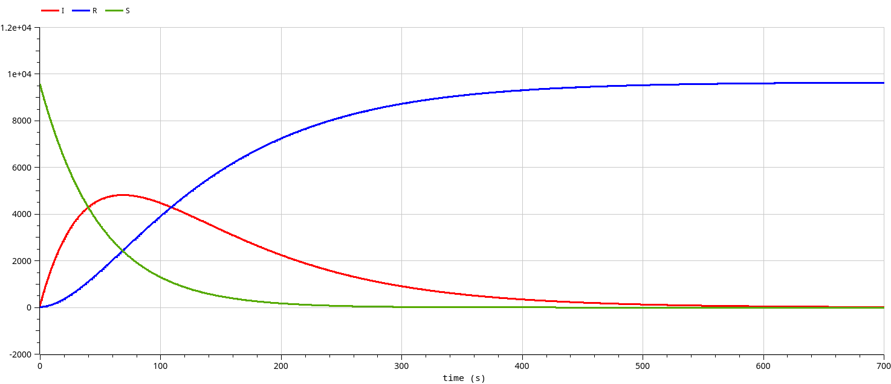
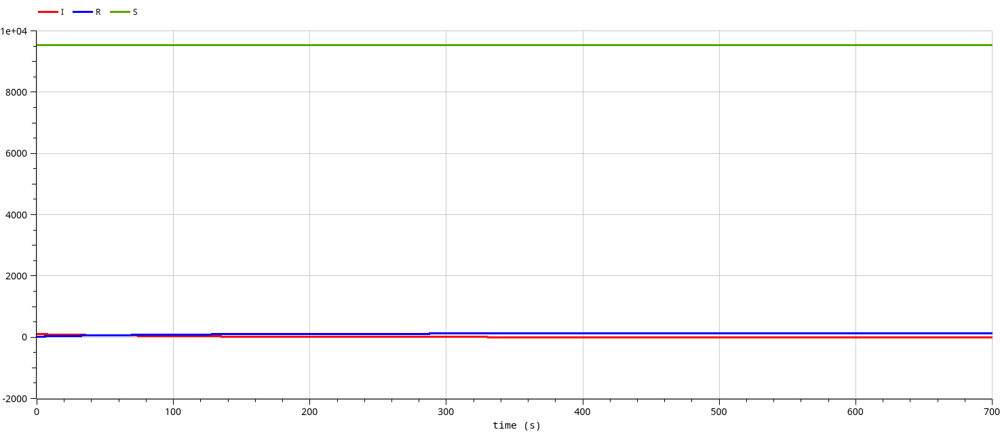
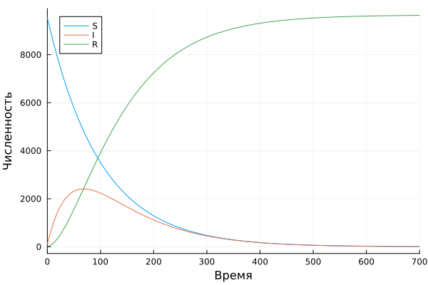
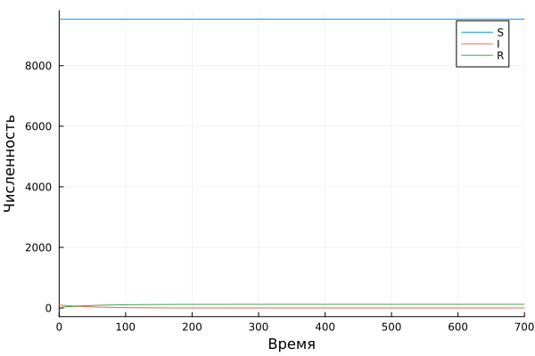

Модель эпидемии
Стариков Д. А.
Российский университет дружбы народов, Москва, Россия
03 мая 2025
Реализовать модель эпидемии в OpenModelica и Julia, построить графики зависимости числа особей из трех групп, рассмотреть 2 случая:
Вариант 52.
На одном острове вспыхнула эпидемия. Известно, что из всех проживающих на острове (N=9654) в момент начала эпидемии (t=0) число заболевших людей (являющихся распространителями инфекции) I(0)=100, А число здоровых людей с иммунитетом к болезни R(0)=20. Таким образом, число людей восприимчивых к болезни, но пока здоровых, в начальный момент времени S(0)=N-I(0)- R(0).
Постройте графики изменения числа особей в каждой из трех групп.
Рассмотрите, как будет протекать эпидемия в случае:
Модель эпидемии в OpenModelica реализована следующим
образом:
model lab06 // SIR
parameter Real alpha=0.02;
parameter Real beta=0.01;
parameter Real I0=100;
parameter Real R0=20;
parameter Real S0=9654-I0-R0;
Real S(start=S0);
Real I(start=I0);
Real R(start=R0);
equation
// случай I0 > I*
//der(S) = -alpha*S;
//der(I) = alpha*S - beta*I;
// случай I0 <= I*
der(S) = 0;
der(I) = -beta*I;
der(R) = beta*I;
annotation(
experiment(StartTime = 0, StopTime = 700, Interval = 0.01));
end lab06;

Модель эпидемии в Julia реализована следующим
образом:
I0 = 100
R0 = 20
S0 = 9654 - I0 - R0
u0 = [S0, I0, R0]
p = [0.01, 0.02]
t = (0,700)
prob1 = ODEProblem(model1, u0, t, p)
prob2 = ODEProblem(model2, u0, t, p)
sol1 = solve(prob1)
sol2 = solve(prob2)
plot(sol1, label=["S" "I" "R"], xaxis="Время", yaxis="Численность")
plot(sol2, label=["S" "I" "R"], xaxis="Время", yaxis="Численность")
